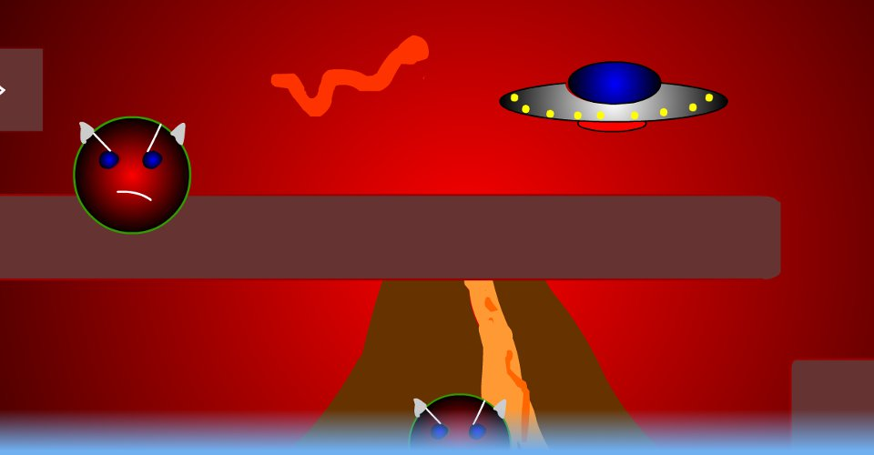

WormWorld
The Evil Count Worm has stolen all of your cheese! Go through the levels to get it all back!
A platformer created with Adobe Flash.
Released: (original release date)
Play Now: (Requires
Adobe Flash Player
)